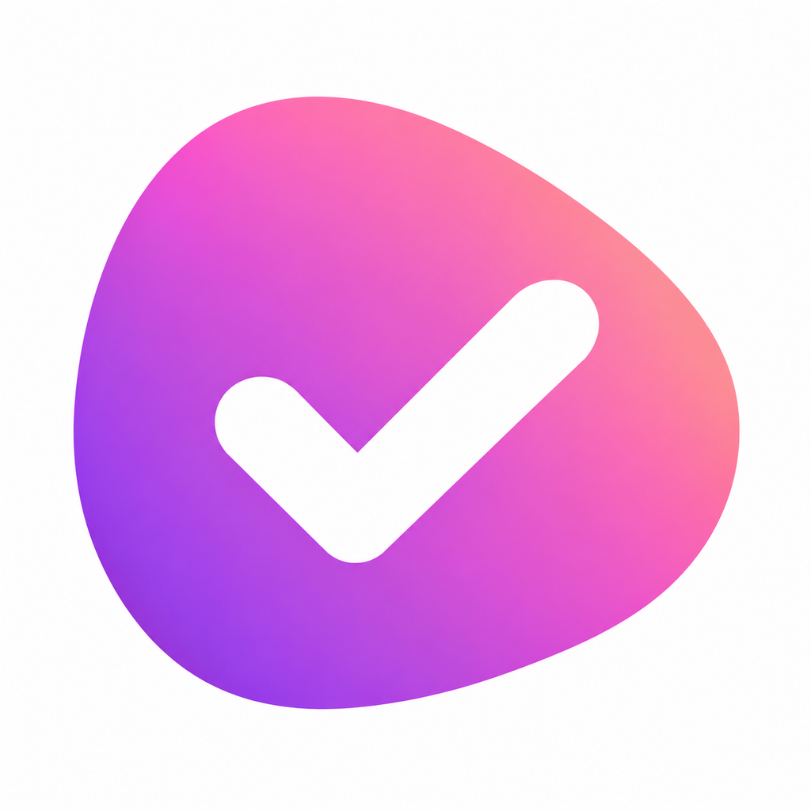

Sana support
Sana is free on iPhone and Mac. Speak or type tasks for Work and Play, add reminders and notes, and choose colour or monochrome. You can use Sana without an account.
Need a hand?
Report a problem or ask a question. Include your iOS or macOS version and what happened. Support reports are public; do not post recordings, private tasks, passwords or personal information.
Contact supportVoice tasks
Tap or click the microphone and speak naturally. Tap the ribbon to finish, or outside it to cancel. On Mac, Command-Shift-Space starts recording, Return finishes and Escape cancels. Transcription and task extraction run on-device. Microphone and Speech Recognition permissions and available on-device recognition are needed. Finish phone calls before recording. Disconnect Xcode’s device screen viewer before testing the physical iPhone keyboard or microphone.
Typed tasks and reminders
Type a task in Work or Play. Sana can recognise date and time phrases. On Mac, Command-N focuses the task field. To adjust details explicitly, long-press a task on iPhone or click its title on Mac and choose Edit details. You can also tap a task’s time to change it. Enable local notifications in device settings to receive reminders. Preferences and sounds are in Profile.
Notes
Open a task’s menu and choose Add notes or Open notes. Write headings, checklists and lists, add a photo or dictate text on-device. Note photo files stay on the device and are not transferred by task sync. Typed notes work without voice permissions.
Accounts and sync
Open Profile → Account & sync and sign up or sign in with Apple or Google. Use the same provider account on both devices. With Sync tasks enabled, account tasks and text notes sync through Supabase. Device-only tasks are not uploaded automatically; choose Add device tasks to account if you want to copy them. Audio, full transcript history, preferences and note photos stay local.
Offline account edits are saved on-device and retry when Sana is open and connected. Check the sync status before assuming another device is up to date. If Sana asks you to choose between conflicting versions, review both before choosing. Turning sync off or signing out does not delete existing cloud records.
Deleting an account
Profile → Account & sync → Delete account permanently deletes the Sana account and its cloud tasks after confirmation. Apple accounts also require Apple confirmation. Device-only tasks and existing local copies, media and history are retained. This does not delete your Apple or Google account. See the privacy policy for retention details.
Appearance, widgets and ratings
Choose Colour or Monochrome in Profile. Add Sana’s iPhone widgets from the Home Screen widget gallery. Enjoying Sana? Use Rate Sana in Profile to share your experience. Rating is optional and all app access is free; there is no trial, payment screen or subscription.